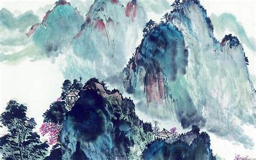
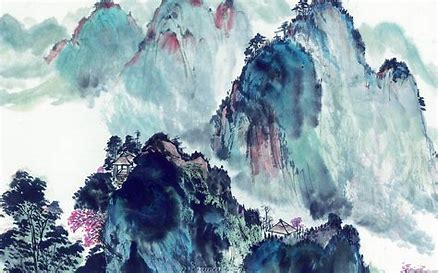

.jpg)
.jpg) 

水墨画，是中国绘画的代表，也就是狭义的“国画”，后传入其他地区。基本的水墨画，仅有水与墨，黑与白色，但进阶的水墨画，也有工笔花鸟画，色彩缤纷，后者有时也称为彩墨画。中国水墨画的特点是：近处写实，远处抽象，色彩微妙，意境丰富。
黑白调子的水墨画早期都是以山水画的形式来表现的，虽然仅有黑与白，但因为纸色的关系，其实是略为偏黄的。彩色的水墨画在近代有泼墨山水的应用，也有水墨动画的应用。
与水墨画有关的还有水墨版画。与一般版画不同的是，水墨版画虽然也是木刻版画，但使用宣纸做为纸材，在不同的地方重复水墨印刷，层层渲染的效果，使得每一张作品都明显不同，也具有水墨画的美感。
中国画的一种。指纯用水墨所作之画。相传始于唐代，成于五代，盛于宋元，明朝及近代以来续有发展。以笔法为主导，充分发挥墨法的功能。
“墨即是色”，指墨的浓淡变化就是色的层次变化，“墨分五彩”，指色彩缤纷可以用多层次的水墨色度代替之。北宋沈括《图画歌》云：“江南董源传巨然，淡墨轻岚为一体。”就是说的水墨画。唐宋人画山水多湿笔，出现“水晕墨章”之效，元人始用干笔，墨色更多变化，有“如兼五彩”的艺术效果。唐代王维对画体提后人宗之。
长期以来水墨画在中国绘画史上占着重要地位。水墨画是中国画的一个分支结构，是组成中国画体系的元素之一。从物理的角度，水墨画就是用毛笔蘸着墨和水的合成物，描绘在宣纸上的一种绘画形式。对此评论家王进玉称，水墨画是一个特殊画种，虽看似纯用宣纸和墨来作画，但却是中国本土所特有的、具有渊源历史传承与深厚文化积淀的一门精深的东方艺术。
“笔墨纸砚”是中国古代文人不可缺少的工具，号称“文房四宝”，其意义不止于书写绘画方面，中国文人对其给予了深厚的文化内涵和感情，历代文人书画大家和笔墨纸砚相关的故事举不胜举。
笔能将墨的神韵最好的发挥出来。毛笔是中国所创，并影响到朝鲜、日本，等亚洲广泛地域的传统书写习惯。毛笔分硬毫，软毫和兼毫，硬毫以狼毫（黄鼠狼尾）为代表，软毫以羊毫（山羊须）为代表，根据写字绘画，种类，以及个人习惯的不同，用笔也不一样，羊毫柔软，狼毫刚健，兼毫柔中带刚。中国的书法和绘画，都是与毛笔的使用分不开的。尤其以湖州（今浙江善琏镇）之湖笔，宣州（今安徽泾县）之宣笔，及江西进贤之笔为上。
墨是寒色，由五墨构成的画应该有寒感，它的调子应该是灰暗的。但又为何好的“水墨画”会使人有温感而不感觉它的调子灰暗呢？这是因为好画善于利用白地（空白）来与黑的寒色相对比、相调和，因而使人有介于寒热之间的温感。而且，好的烟墨并不是暗墨。古代徽州所 产之墨，历来为文人所喜爱，徽墨有金不换之美称。
凡光滑受光而反射强者都叫做明物，好墨的黑光泽如漆，故可叫做明黑，因而是不会让人有灰暗感的。
墨的分类：
（1）根据墨的深浅层次，可分为作墨、淡墨、浓墨、极淡墨和焦墨五墨，即焦墨（原墨）一浓墨一重墨一淡墨一清墨五层次；
（2）根据墨的材料，可分为“油烟”、“松烟”和漆烟三种。油烟墨用桐油或添烧烟加工制成；松烟墨用松枝烧烟加工制成，漆烟是用国漆作燃料，燃烧后的烟垢加胶加工而制作成的。
中国画用纸种类广泛。如宣州所产宣纸、四川的皮纸、河南禹县布纸、湖南来阳棉纸等等，推而广之，不但是纸，绫、绢等织物都是绘画的材料。但宣纸种类多，产量高，品质好，其特性将国画要求反复地上色，因此像绢织物一样，适合于画工笔画；且较绢等价格便宜，故宣纸几乎已成为国画用纸的代名词。宣纸分生宣和熟宣两种。生宣是没有经过矾水加工的，水墨容易渗透，落笔为定，无从更改，而且渗透开来，能产生丰富的笔墨变化，所以写意画多用生宣。熟宣是用矾水加工过的，水墨不容易渗透，在上面可以工整细致地描绘。
砚是磨墨用的。要求细腻滋润，容易发墨，并且墨汁细匀
无渣。砚以安徽歙县之歙砚、广东端溪的端砚、甘肃的洮砚及山西的澄泥砚，最为名贵，号称四大名砚。常有古人为求一方名砚，不惜倾其所有。
除文房四宝之外，印章、印泥、笔架、笔洗、笔筒、文镇等相关绘画用具还有很多，广义的文房四宝也将以上所举列入其中。
鉴赏墨：如故宫收藏的“乾隆御咏西湖十景十色墨”，色彩各异，墨的形式富于变化。一面为阴文楷书填金乾隆御咏西湖十景十色七言律诗，一面浮起诗中所咏西湖十景图画。依次为“曲院风荷”、“花港观鱼”、“苏堤春晓”、“断桥残雪”、“三潭印月”、“双峰插云”、“柳浪闻莺”、“南屏晚钟”等。画面的构图，以极简练的手法刻画出方题的基本特征，艺术地再现了杭州西湖的美丽景色，形象地反映出200多年前，西湖十景的历史面貌，是较好的鉴赏墨。此套墨为色墨，是绘画用的颜料，有红、黄、青、绿、蓝、棕、白色等色，多为天然色料配制，色彩纯净艳丽，不易褪色。虽早期色墨不多见，但从唐、宋的绘画中，可以看到颜料的精美与华丽。唐人《金碧山水图》，画面以青、绿色彩为主，间施以金描绘出秀丽苍翠的山川，巍峨宏伟的殿阁，展现出辉煌壮丽的自然图景，突出了色彩的美丽。五代著名画家顾闳中创作的《韩熙载夜宴图》，画面前后分作5段，用浓笔生彩的艺术手法，把南唐宰相韩熙载的夜生活，刻画得惟妙惟肖。宋徽宗赵佶的《听琴图》，色彩柔和艳丽，人物传神，更显出色彩的美妙。这些在纸、绢上的色彩，已历经了八九百年，乃至上千年历史沧桑，仍然保持着夺目的光彩，充分显示了这些彩色墨制造精良，是古代鉴赏的佳品。
鉴别文物真伪是文物科研及陈列研究的前提，无鉴别真伪就谈不到鉴定。所以鉴别、鉴定是文物工作者首要解决的。我们鉴别鉴定的目的是为人们提供研究真实可靠实物的参考凭证。我们鉴别墨也一样，要求多看实物、多记实物，通过实物与文献资料相互印证，看后加以思考，善于比较分析，善于发现问题，多看实物是可以对某一名家名作的墨质、题识、图案、墨品、风度认识就越深刻熟悉。加上不断充实自己的学识，多学文献资料，并学会区分歙县与休宁各派的墨品及风度的特点，通过对墨品的了解，即使在没有年款的情况也可以鉴定出是哪些名家墨品。如：康熙三十五年所制“耕织图”墨品，乾隆三十年所制“棉花图”无论仿造、改制，我们都可以断定康熙三十五年以前没有“耕织图”墨品，乾三十年以前没“棉花图”墨品，以后仿造可能就是旧模新作比较容易鉴别真伪。还有清代名家墨品分等级、价格也可以参考。
元 王冕 《墨梅图》 局部
另外避讳对墨影响，封建社会有国讳与家讳之说。国讳是避皇帝与孔子的名；家讳是避自己祖先的名字。避讳的方法是，在书写时候凡遇到应避的名讳，或缺笔或易字，说念之时改原音。“避讳”对于文物鉴别有一定影响。如“避讳”对于明清两代墨的鉴别尤为重要。明代还可以，在明清两代制墨中品名，斋名常用“玄”字，“玄元灵气”、“九玄三极”等。到了清代康熙皇帝名玄烨，因而“玄”字避讳，或改写元，或缺写一笔，明清两代凡有“玄”字的墨如不是仿造假品，当是康熙以前的作品。如“玄”改写“元”或缺一笔当是康熙以后的作。而由于“玄”字墨品给明代墨带来多少厄运。明代的“玄”字墨到了康熙以后，均挖去“玄”字或将墨毁坏。总之“玄”给明代传品招致厄运，其损失不可估计，但同时也在鉴别方面起到了划分时代的作用。由于明清两代书画受各流派的影响，其风格有所不同；因书画风格不同，其墨模雕刻技巧、手法，显然有时代的区分。明代的书法多遒劲，雕刻手法为了表达遒劲，刀法则需要深厚，才能显示字体雄健，阳文字锋芒峻厉，圭角崭然。清代书法多秀润，雕刻手法必须掌握精秀润细的刀法，才能表达柔丽清雅。绘画与书法完全一致，因之明清两代雕刻墨模的技巧，以明清两代书画不同风格，而形成两大流派：明代墨模，其刀法多深厚有力；清代墨模，其刀法多柔妍精细。其所以不同，实因书法绘画风格不同所致。这样对鉴别明清两代名墨，就可掌握内涵。
明清两代大部分为了更换墨模，不在模上刻用年款，即刻上也在侧面，更换时也不影响墨面。
元 王冕 《墨梅图》 局部
在墨上考证年代，只能以自制墨来解决，文人官吏嘱墨家制墨不惜墨模成本，带有纪念性的墨品，多署干支年款，这就为我们考证年代提供了方便。
另外从墨模上鉴别墨品，墨模使用年久影响墨面的清晰，凡是初版初刻，花纹、书画、印章均特别清楚悦目；相反，墨模使用久了，墨面就显得模糊不清，可能是复制，年代则稍晚一些，所以说墨模可以反映墨家业务大小，经营盛衰。
墨品的漆衣，是在墨布加刮摩。通过漆衣也可鉴别墨，漆衣墨凡年代较远，漆皮显得浑厚，并呈蛇皮断纹，与古琴相似。断纹不是裂纹，有纹不裂，隐蕴在漆皮之间，又与古瓷开片相同。漆皮墨盛于万历年间，清康熙墨少见，乾隆晚期以后漆衣墨，其光泽漂亮有余，而苍厚浑朴不足。墨上的漆边也可作为不同时代的风尚，有助于我们对年代的鉴别。明代大从漆上下左右侧通漆边，正面背面为本色。清代多漆两面的边，两侧上下都不漆。
明 徐渭 《墨花图》册
凡质料粗糙，几乎不是烟料，形同土块，用手敲之，声音喑哑，体轻呈灰白色，墨模粗糙，墨料不好，这些是伪品的特征。还有一种伪品，是使用一种炭晶石，一种石质材料磨成的假墨。对仿品又如何鉴别呢？清代墨家仿明代墨，一种是只标明 年款，不署墨家名款。另一种只标时某墨家仿明代某墨家，这类有仿家自己的名款，也有被仿家的名款，是为宣扬自己而不是骗人，因此有人把清代初年制的精品墨原名款挖去，再用墨蜡填平，并在墨蜡处镌刻名章、年款、略施金色加以打磨。这种仿品不易识别。
墨的品种繁多，实用本色墨不仅数量多，形状大体相同。我们可以识别墨正反两面是否刻上文字及图案（即墨名）。左右两侧是否有监制单位名称。也有在侧面镌刻年代的，墨的顶端刻有“超漆烟”、“漆烟”、“顶烟”、“桐油烟”字样，表示该墨锭属油烟墨范畴；刻有“黄山松烟”、“大卷松烟”、“松烟”等字样的表示该墨锭属松烟范畴；刻有“全烟”、“精烟”、“净烟”等字样，该墨属炭黑墨范畴。
总之，要求鉴藏者有相当的知识和经验。首先要求大体熟悉古墨源流的发展演变史，知道古代名墨的主要产地和著名的制墨宾的姓氏名款，对名家墨的著名的墨模式样也要有一定的了解。
另外从质地来说，新墨和旧墨也有较明显的差别。新墨带灰色，虽浓厚不朗润，旧墨纯黑朗润，色泽纯黑，色感厚实。新墨由于和胶往往不匀，其墨色也就显得浓淡、厚薄不匀，旧墨由于制法严谨、加上存放时间久远，其胶自然匀实，其黑色平整，而且不粘笔毫。新墨气味有燥性，旧墨有一股自身的古朴淡远的馨香之气，且显出一种古朴的色调。
.jpg)
.jpg)